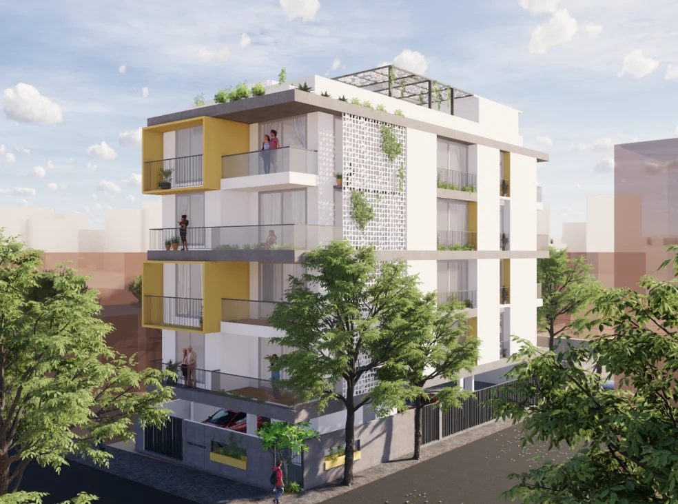

Current project
TechnoPrime Vasudha
Premium, amenities-rich living in J.P. Nagar.
TechnoPrime Vasudha brings our philosophy to life: amenities-rich, eco-friendly and safe homes, built with the latest building technologies and the highest-quality materials, in one of Bangalore's most established neighbourhoods.
Highlights
- Amenities-rich, eco-friendly and safe homes
- Latest building technologies and high-quality materials
- Vastu-aligned planning for holistic living
- An established J.P. Nagar location, well connected across Bangalore
Location
Where it is
TechnoPrime Vasudha is in J.P. Nagar 2nd Phase, behind Ragigudda temple, with easy access to schools, hospitals, transit and the rest of South Bangalore.
-
Address# 37, KSRTC Layout, 5th Cross, 3rd Main, J. P. Nagar 2nd Phase, behind Ragigudda Temple, Bangalore 560078
-
Site visits and brochure9008512277 (Ashuthosh)
Interested?
Book a visit to TechnoPrime Vasudha
We send the brochure and floor plans on request, over WhatsApp or email, and arrange a site visit. We are happy to walk you through everything.